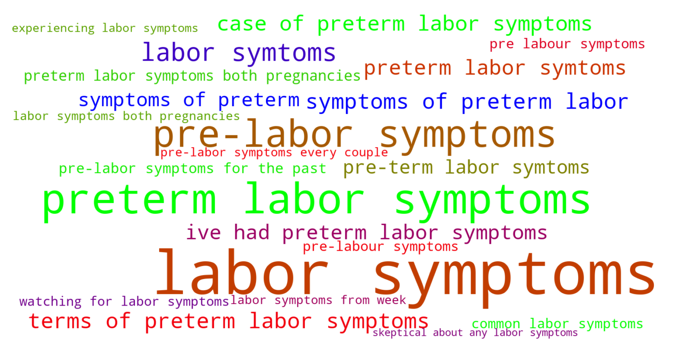
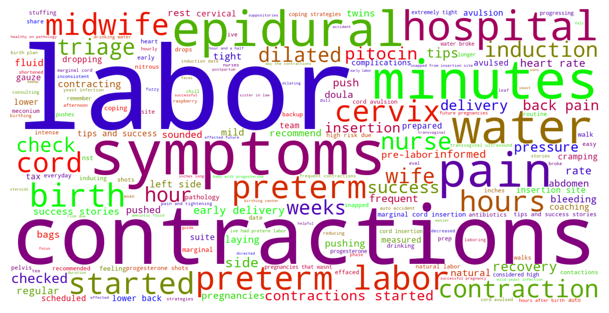

Jump to section:
Samples from Social CorpusHits per UMLS Alias on Social Corpus
Word Cloud Comparison
Embedding Space Comparison
Nearest Neighbors by Semantic Type
Related Analysed Concepts
Samples from Social Corpus
Two Weeks Notice Tomorrow I 'll be 37 weeks , and have been having inconsistent pre-labor symptoms for the past week .
Confidence: 0.711. Reddit link
Wish me luck ladies and godspeed to the rest of you watching for labor symptoms !
Confidence: 0.622. Reddit link
I've missed two days of work this last week due to needing a day for emotional hormone overflow and another for possible pre-term labor symtoms .
Confidence: 0.773. Reddit link
This whole goddamn week has been a clusterfuck of impending labor symptoms and on-and-off contractions .
Confidence: 0.798. Reddit link
When it's really painful with other pre-labour symptoms and at 39 weeks , it's latent phase labour ) and they tend to ease off after getting some sleep .
Confidence: 0.685. Reddit link
I have been having some pre-labor symptoms every couple of days but the contractions are inconsistent intervals and intensity .
Confidence: 0.613. Reddit link
I'm thinking these are all pre-labor symptoms .
Confidence: 0.804. Reddit link
With this pregnancy , I had been uncomfortable with BH contractions , cramping , mild labor symptoms from week 36 on .
Confidence: 0.609. Reddit link
I'm currently 32 + 2 weeks pregnant with di / di girl twins and I don't know what to look out for in terms of preterm labor symptoms ?
Confidence: 0.938. Reddit link
Though I was excited that it seemed I was having some labor symptoms , I knew that those could go on for days .
Confidence: 0.798. Reddit link
Hits per UMLS Alias on Social Corpus
-
preterm labor symptoms
46 hits
Word Cloud Comparison
Keywords matching C2735340
Keywords matched against concept. Word size represents frequency.
Keywords co-occurring with C2735340
Co-occurrence is measured at the document-level (i.e. Reddit submissions). Frequencies are normalized to account for keywords common to all CUIs.
Embedding Space Comparison
T-SNE comparison for word embeddings learned from medical domain (EuroPMC) and social media (Reddit) independently.
Pearson correlation for union of closest 1000 neighbors: 0.095
Nearest Neighbors by Semantic Type
Most similar concepts in each of the selected UMLS semantic types. Based on concept embeddings from social corpus.
T184 (Sign or Symptom)
-
C2735340
Preterm labor symptoms
1.000 Similarity
-
C0741426
Back symptoms
0.830 Similarity
-
C0426317
Gut symptoms
0.824 Similarity
-
C0422833
Ent symptoms
0.822 Similarity
-
C0392171
Flu like symptoms
0.810 Similarity
-
C0476270
Heart symptoms
0.799 Similarity
-
C0423479
Ear symptoms
0.799 Similarity
-
C0521991
Stress symptoms
0.753 Similarity
T047 (Disease or Syndrome)
-
C0948873
Flu symptoms
0.816 Similarity
-
C0863093
Cold symptoms
0.800 Similarity
-
C0032965
Pregnancy infection
0.684 Similarity
-
C0940933
Complications infection
0.672 Similarity
-
C0340464
Extrasystoles
0.659 Similarity
-
C0473498
Ruptured uterus before labor
0.657 Similarity
-
C0877121
Aids related complications
0.655 Similarity
-
C0033036
Atrial premature contractions
0.649 Similarity
T046 (Pathologic Function)
-
C0022876
Early labor
0.788 Similarity
-
C0810343
Complications during labor
0.751 Similarity
-
C0085598
False labor
0.735 Similarity
-
C0022865
Complications labor
0.727 Similarity
-
C0151526
Pre term
0.712 Similarity
-
C0152154
Labor long
0.712 Similarity
-
C0269810
Sepsis during labor
0.707 Similarity
-
C0473390
Threatened preterm labor
0.697 Similarity
T061 (Therapeutic or Preventive Procedure)
-
C1274136
Alleviate symptoms
0.762 Similarity
-
C0033045
Pre meds
0.618 Similarity
-
C0269694
Normal birth
0.604 Similarity
-
C1301849
Uterine contraction monitor
0.589 Similarity
-
C0849164
Blood medication
0.585 Similarity
-
C0030231
Palliative care
0.577 Similarity
-
C0029967
Ovulation induction
0.565 Similarity
-
C0269704
Spontaneous vaginal breech birth
0.562 Similarity
T079 (Temporal Concept)
-
C2964377
Preterm time
0.738 Similarity
-
C0585037
Pregnancy time period
0.664 Similarity
-
C0022872
Second stage labour
0.660 Similarity
-
C0022871
Labor first stage
0.639 Similarity
-
C0814007
Pregnancy stage
0.624 Similarity
-
C0032979
First trimester
0.620 Similarity
-
C4025592
Late onset
0.595 Similarity
-
C0032980
Second trimester
0.592 Similarity
T100 (Age Group)
-
C4048294
Preterm baby
0.718 Similarity
-
C3494262
Extremely preterm infant
0.601 Similarity
-
C4551581
Full term baby
0.533 Similarity
-
C0021289
Newborn
0.404 Similarity
-
C0678804
Prenatal
0.402 Similarity
-
C3825962
Middle aged women
0.390 Similarity
-
C1444711
Preteen
0.378 Similarity
-
C0680085
Early adulthood
0.365 Similarity
T060 (Diagnostic Procedure)
-
C0040862
Labor trial
0.659 Similarity
-
C0033053
Prenatal diagnoses
0.638 Similarity
-
C0032976
Pregnancy test
0.625 Similarity
-
C1578855
Monitoring labor
0.586 Similarity
-
C0596473
Detection early
0.578 Similarity
-
C2960339
Ultrasound scan second trimester
0.564 Similarity
-
C0200068
Contractions stress test
0.546 Similarity
-
C0195324
Cone biopsy
0.535 Similarity
T201 (Clinical Attribute)
-
C0566679
Length labor
0.650 Similarity
-
C1285995
Measure uterine contractions
0.573 Similarity
-
C3828490
Pregnant during study
0.569 Similarity
-
C0233131
Intensity uterine contraction
0.562 Similarity
-
C1286038
Position pregnancy
0.559 Similarity
-
C1301668
Delivery time
0.540 Similarity
-
C1286046
Labor pattern
0.527 Similarity
-
C1286282
Birth outcomes
0.522 Similarity
T041 (Mental Process)
-
C3838995
Ability recognize symptoms
0.649 Similarity
-
C0241999
Moodiness
0.489 Similarity
-
C0233496
Aversions
0.482 Similarity
-
C0015726
Scared
0.479 Similarity
-
C0034763
Testing reality
0.478 Similarity
-
C4280069
Positive thinking
0.472 Similarity
-
C0871504
Test anxiety
0.471 Similarity
-
C0017324
Generalization
0.469 Similarity
T034 (Laboratory or Test Result)
-
C0427777
Pregnancy results tests
0.630 Similarity
-
C0240802
Positive pregnancy test
0.603 Similarity
-
C0427780
Negative pregnancy test
0.585 Similarity
-
C0425986
Pregnant blood test confirms
0.562 Similarity
-
C2266672
Clotting time finding
0.531 Similarity
-
C0588465
Sperm forward progression
0.525 Similarity
-
C0241988
M spike
0.512 Similarity
-
C0587081
Labs
0.510 Similarity
T059 (Laboratory Procedure)
-
C0850355
Pregnancy blood test
0.617 Similarity
-
C0005729
Bleeding time
0.597 Similarity
-
C1295143
Fetal fibronectin test
0.548 Similarity
-
C0368930
Clotting time
0.528 Similarity
-
C0023901
Liver tests
0.520 Similarity
-
C0018941
Blood test
0.511 Similarity
-
C0005771
Blood cell count
0.506 Similarity
-
C0023508
White blood cells
0.502 Similarity
T005 (Virus)
-
C0205939
Cold virus common
0.609 Similarity
-
C5058350
Fairfax lookout virus
0.599 Similarity
-
C3949524
Mischivirus
0.547 Similarity
-
C3743464
Mycobacteriophage whirlwind
0.544 Similarity
-
C0086776
Parvovirus
0.504 Similarity
-
C0949920
Stomach virus
0.495 Similarity
-
C4433204
King virus
0.484 Similarity
-
C0042776
Virus
0.483 Similarity
T037 (Injury or Poisoning)
-
C3544104
Exposure during pregnancy
0.586 Similarity
-
C3203359
Ruptures
0.583 Similarity
-
C0417108
Jump from burning hospital
0.577 Similarity
-
C0269858
Traumatic lesion during delivery
0.561 Similarity
-
C1959898
Traumatic injury during pregnancy
0.544 Similarity
-
C0730592
Vulval tear during delivery
0.537 Similarity
-
C0016479
Food poisoning
0.525 Similarity
-
C0005604
Traumatic birth
0.520 Similarity
T074 (Medical Device)
-
C0593622
Home pregnancy test
0.580 Similarity
-
C0043305
Intensifying screen xray
0.536 Similarity
-
C3878737
Uternine contraction monitor internal
0.528 Similarity
-
C0179350
Blood gas monitor
0.495 Similarity
-
C0180236
Curetting
0.473 Similarity
-
C0005825
Blood pressure monitor
0.448 Similarity
-
C0788300
Protein testing
0.448 Similarity
-
C0302649
Cup menstrual
0.434 Similarity
T048 (Mental or Behavioral Dysfunction)
-
C0338927
Hospitalism
0.578 Similarity
-
C0522187
Fear childbirth
0.548 Similarity
-
C0233704
Fears pregnancy
0.541 Similarity
-
C0232600
Making self sick
0.540 Similarity
-
C0038436
Ptsd
0.540 Similarity
-
C0855228
Disordered eating
0.524 Similarity
-
C4543692
Anxiety pregnancy
0.518 Similarity
-
C0588007
Moderate depression
0.515 Similarity
T042 (Organ or Tissue Function)
-
C0042130
Uterine contractions
0.577 Similarity
-
C0232102
Blood fluidity
0.537 Similarity
-
C0019116
Stopping bleeding
0.532 Similarity
-
C0027045
Heart beating
0.523 Similarity
-
C0522026
Lengthening contraction
0.518 Similarity
-
C0079103
Cervical dilation
0.511 Similarity
-
C4250378
Neural induction
0.510 Similarity
-
C0005778
Clotting
0.509 Similarity
T067 (Phenomenon or Process)
-
C0023983
Long term effects
0.574 Similarity
-
C5197751
Sea level rise
0.475 Similarity
-
C0337240
Fall while being carried
0.471 Similarity
-
C0677038
Increase pressure
0.467 Similarity
-
C2986841
Binding potential
0.429 Similarity
-
C0034897
Recurring
0.414 Similarity
-
C0035020
Relapse
0.411 Similarity
-
C0012652
Outbreak
0.409 Similarity
T101 (Patient or Disabled Group)
-
C0008098
Child hospitalized
0.569 Similarity
-
C0871503
Dying patients
0.526 Similarity
-
C0233363
Monoamniotic twins
0.503 Similarity
-
C0682161
Dually diagnosed
0.494 Similarity
-
C0021562
Inpatient
0.477 Similarity
-
C1516213
Cancer patient
0.474 Similarity
-
C0260101
Sick child
0.453 Similarity
-
C0029921
Outpatient
0.444 Similarity
T023 (Body Part, Organ, or Organ Component)
-
C1514389
Pregnant uterus
0.567 Similarity
-
C0521421
Entire ear
0.509 Similarity
-
C0007874
Cervix
0.500 Similarity
-
C0545792
Kidney liver
0.494 Similarity
-
C0042149
Uterus
0.492 Similarity
-
C0032005
Pituitary
0.487 Similarity
-
C0448155
Entire body axis
0.486 Similarity
-
C0041951
Ureter
0.485 Similarity
T032 (Organism Attribute)
-
C0805393
Breathing spontaneous
0.551 Similarity
-
C0017504
Gestational age
0.518 Similarity
-
C1954788
Gestational age weeks
0.497 Similarity
-
C3714565
Physical condition
0.454 Similarity
-
C4086849
Sex at birth
0.444 Similarity
-
C0598779
Life history
0.438 Similarity
-
C0751992
Fetal weight
0.433 Similarity
-
C0557155
Life event
0.433 Similarity
T200 (Clinical Drug)
-
C3218395
Papain pill
0.550 Similarity
-
C3216620
Progesterone vaginal product
0.492 Similarity
-
C0723917
Triple antibiotic ointment
0.463 Similarity
-
C5222490
Progesterone injection
0.443 Similarity
-
C1247687
Progesterone suppositories vaginal
0.431 Similarity
-
C1242003
Mol iron tablets
0.417 Similarity
-
C0307304
Pitocin injection
0.413 Similarity
-
C1247002
Misoprostol oral tablet
0.394 Similarity
T019 (Congenital Abnormality)
-
C0266383
Abnormality uterus
0.546 Similarity
-
C0000768
Birth defect
0.527 Similarity
-
C0266389
Unicornuate uterus
0.510 Similarity
-
C0018798
Heart defect
0.509 Similarity
-
C0266387
Bicornuate uterus
0.507 Similarity
-
C0266393
Uterus didelphys
0.506 Similarity
-
C0152240
Septate uterus
0.494 Similarity
-
C0152021
Congenital heart disease
0.480 Similarity
T049 (Cell or Molecular Dysfunction)
-
C4725191
Stop lost
0.537 Similarity
-
C0544885
Stop gain
0.487 Similarity
-
C0002938
Aneuploidy
0.453 Similarity
-
C0008625
Chromosomal abnormality
0.449 Similarity
-
C1705285
Mutated
0.443 Similarity
-
C0041107
Trisomy
0.433 Similarity
-
C0008628
Del
0.414 Similarity
-
C0040715
Translocation
0.396 Similarity
T039 (Physiologic Function)
-
C0026820
Muscle contraction
0.528 Similarity
-
C0234192
Feeling cold
0.476 Similarity
-
C0599423
Joint stress
0.462 Similarity
-
C0743925
Fetal growth
0.458 Similarity
-
C0039971
Thirst
0.454 Similarity
-
C0149784
Reaction stress
0.448 Similarity
-
C0282498
Heat responses
0.440 Similarity
-
C0025320
Change
0.436 Similarity
T190 (Anatomical Abnormality)
-
C0009918
Contraction joint
0.525 Similarity
-
C4025734
Anomaly scalp
0.524 Similarity
-
C3887590
Stricture ureter
0.496 Similarity
-
C0332447
Anomaly
0.479 Similarity
-
C0332482
Distortion
0.478 Similarity
-
C0032584
Polyps
0.474 Similarity
-
C0269852
Previa vasa
0.468 Similarity
-
C0149952
Ovary torsion
0.460 Similarity
T031 (Body Substance)
-
C0242216
Gall stones
0.519 Similarity
-
C0392908
Secretion vaginal
0.512 Similarity
-
C0439057
Early morning urine
0.510 Similarity
-
C3496630
Swab from uterus
0.509 Similarity
-
C0007806
Spinal fluid
0.483 Similarity
-
C3532423
Swab from hand
0.480 Similarity
-
C0585350
Mucous discharge
0.478 Similarity
-
C1446336
Multiple plaques
0.477 Similarity
T054 (Social Behavior)
-
C0815201
Couple relations
0.509 Similarity
-
C0422386
Patient suing doctor finding
0.458 Similarity
-
C0019421
Straight
0.456 Similarity
-
C0582101
Talking about dying
0.452 Similarity
-
C0028658
Nurse patient
0.450 Similarity
-
C0237581
Animal division labor
0.434 Similarity
-
C1319178
Coping family
0.424 Similarity
-
C2936696
Group thinking
0.423 Similarity
T007 (Bacterium)
-
C0018154
Gram positive bacteria
0.506 Similarity
-
C0995648
Genus quinella
0.449 Similarity
-
C0036111
Salmonella
0.443 Similarity
-
C0579233
Group b strep
0.420 Similarity
-
C3137302
Brownia
0.405 Similarity
-
C0023859
Listeria
0.388 Similarity
-
C0004611
Bacteria
0.382 Similarity
-
C4277510
Expec
0.358 Similarity
T195 (Antibiotic)
-
C0003232
Antibiotics
0.480 Similarity
-
C0718575
Antibiotics ear
0.429 Similarity
-
C0723285
Septa
0.417 Similarity
-
C0002645
Amoxicillin
0.386 Similarity
-
C0013090
Doxycycline
0.378 Similarity
-
C0030842
Penicillin
0.348 Similarity
-
C0279516
Antibacterial
0.337 Similarity
-
C0718950
Biomox
0.333 Similarity
T018 (Embryonic Structure)
-
C0440731
Fetal brain
0.475 Similarity
-
C0553498
Gestational sac
0.463 Similarity
-
C0015965
Fetal
0.449 Similarity
-
C0015935
Fetal heart
0.441 Similarity
-
C1284022
Trilaminar disc
0.439 Similarity
-
C0002630
Amniotic
0.436 Similarity
-
C0008508
Chorionic villi
0.435 Similarity
-
C1278988
Entire placenta
0.426 Similarity
T044 (Molecular Function)
-
C1152025
Docs
0.448 Similarity
-
C1749457
Ligands activity
0.411 Similarity
-
C1149528
Wishful thinking binding
0.407 Similarity
-
C0887940
Gene arrangements
0.404 Similarity
-
C1721104
Breaks dna
0.394 Similarity
-
C1150342
Dopachrome rearranging enzyme
0.366 Similarity
-
C1167622
Physical interaction
0.350 Similarity
-
C0010357
Cross reactive
0.349 Similarity